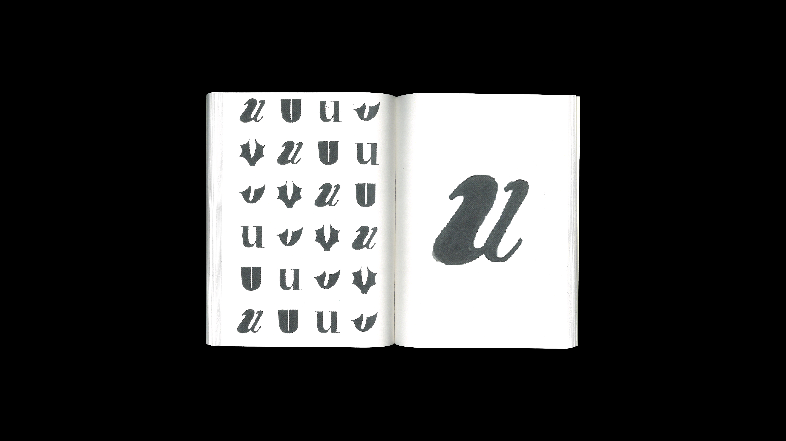
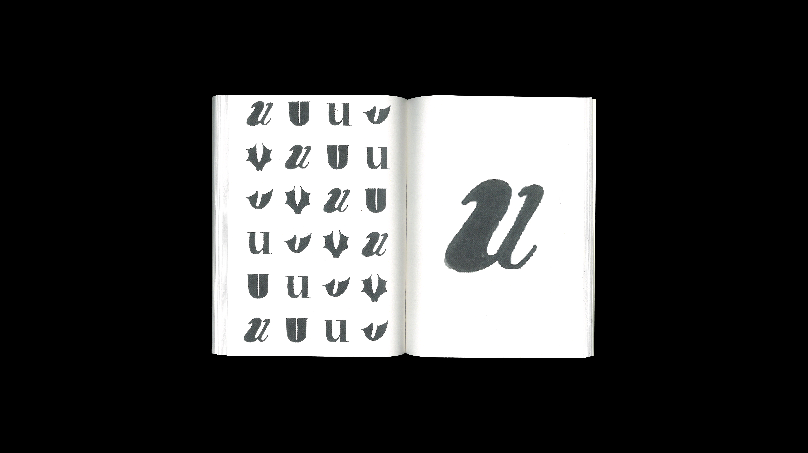
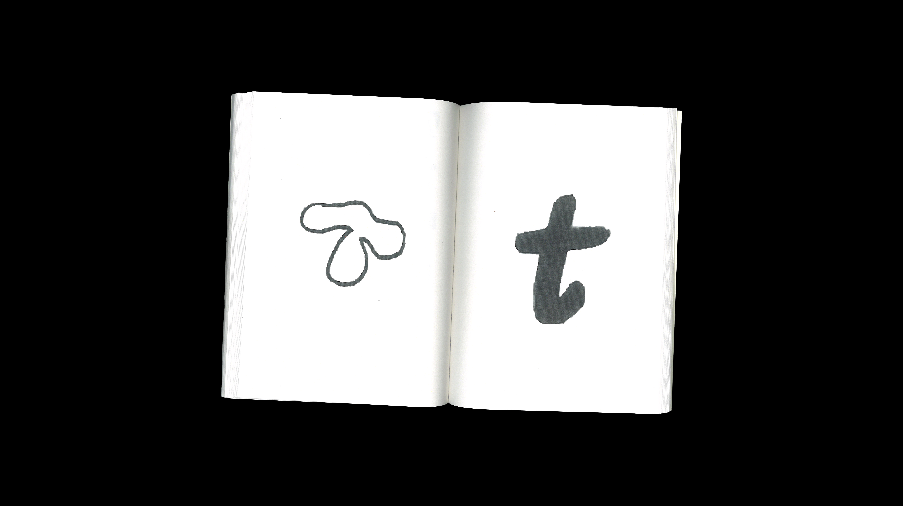
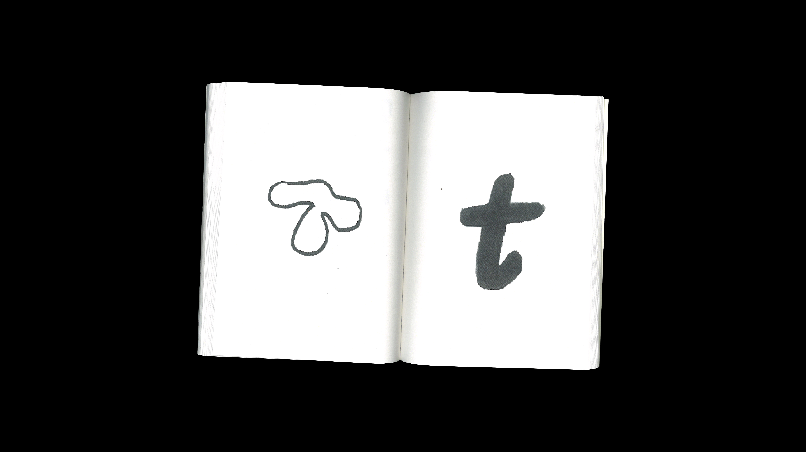

Typography tools kit is an experimental project consisting of a poster and an edition, produced in April 2023. Here, I wanted to explore the different opportunities offered by typography. This collection of lettering and typefaces was created with a view to being reused in different projects at a later date. The edition includes all the typographic experiments, scanned in, and the final choice on the poster. This project freed me up in my typographic practice, as well as creating a personal bank of resources and ideas..
Trousse à outils typographiques est un projet expérimental composé d'une affiche et d'une édition, produit en avril 2023. Ici, j'ai voulu explorer les différentes opportunités offertes par la typographie. Cette collection de lettrages et de polices de caractères a été créée dans le but d'être réutilisée dans différents projets par la suite. L'édition comprend toutes les expérimentations typographiques, scannées, et le choix final sur l'affiche.Ce projet m'a permis de me libérer dans ma pratique typographique, ainsi que de créer une banque personnelle de ressources et d'idées.
 

 
